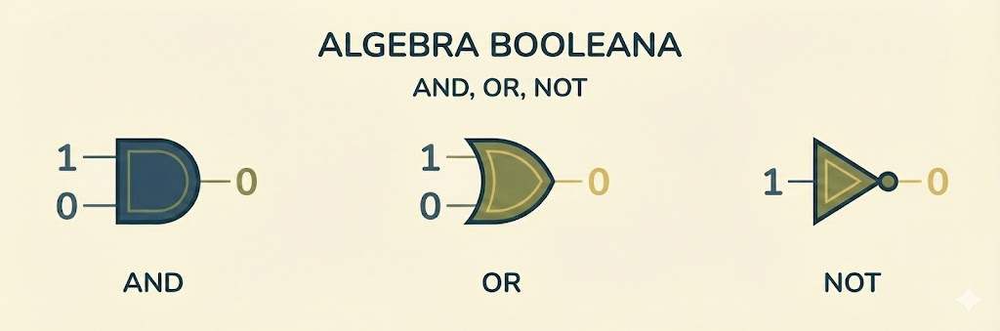
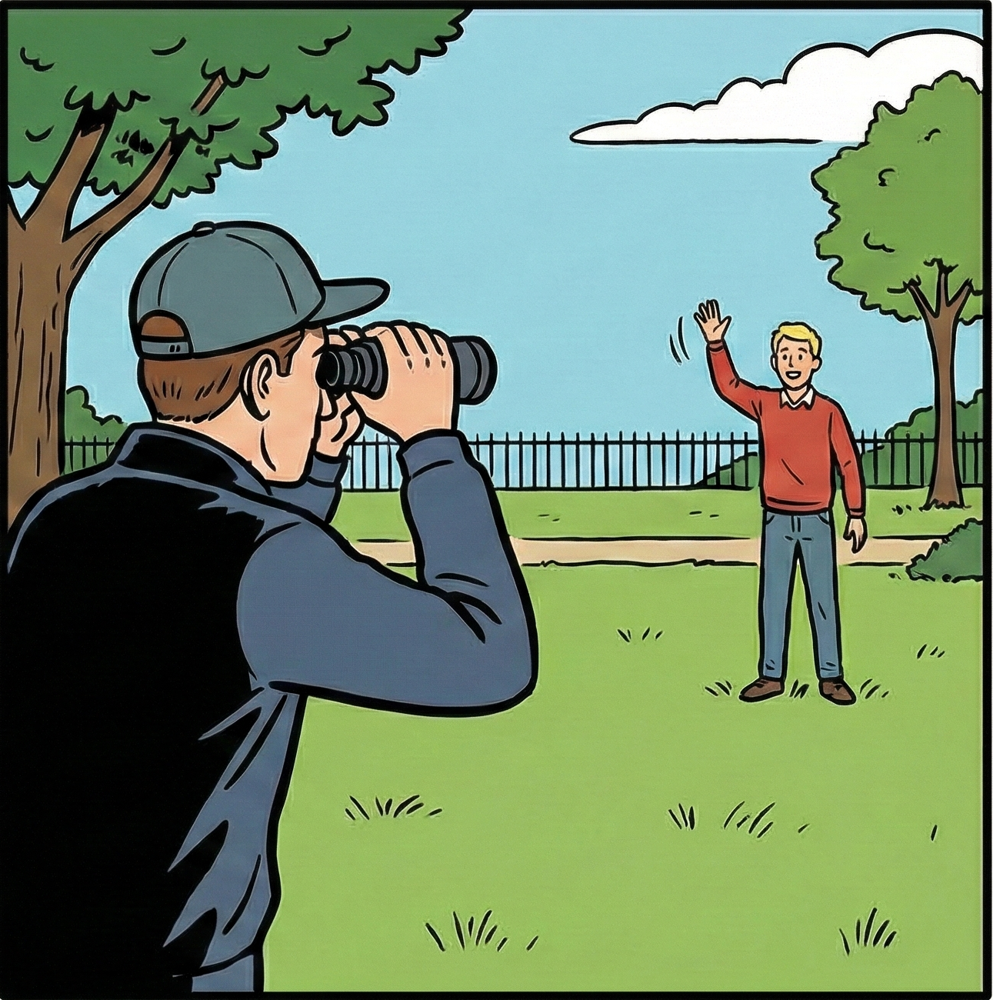
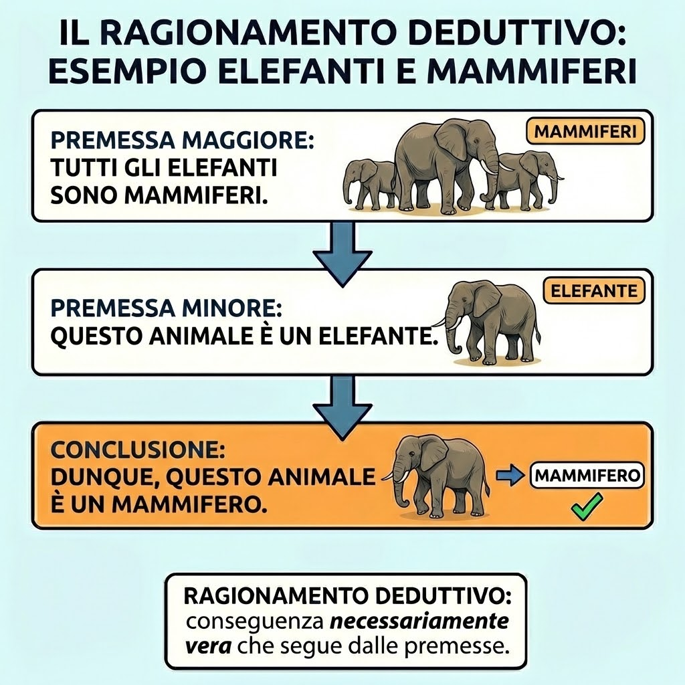
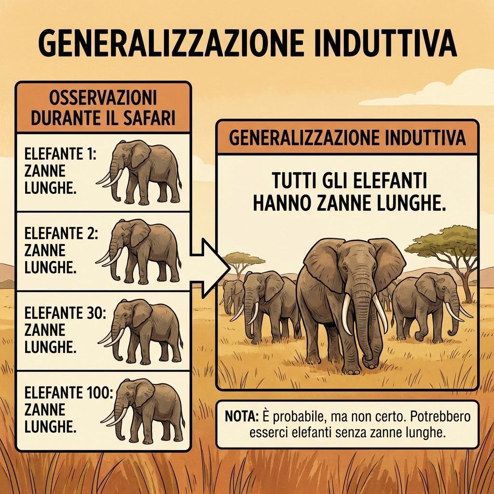
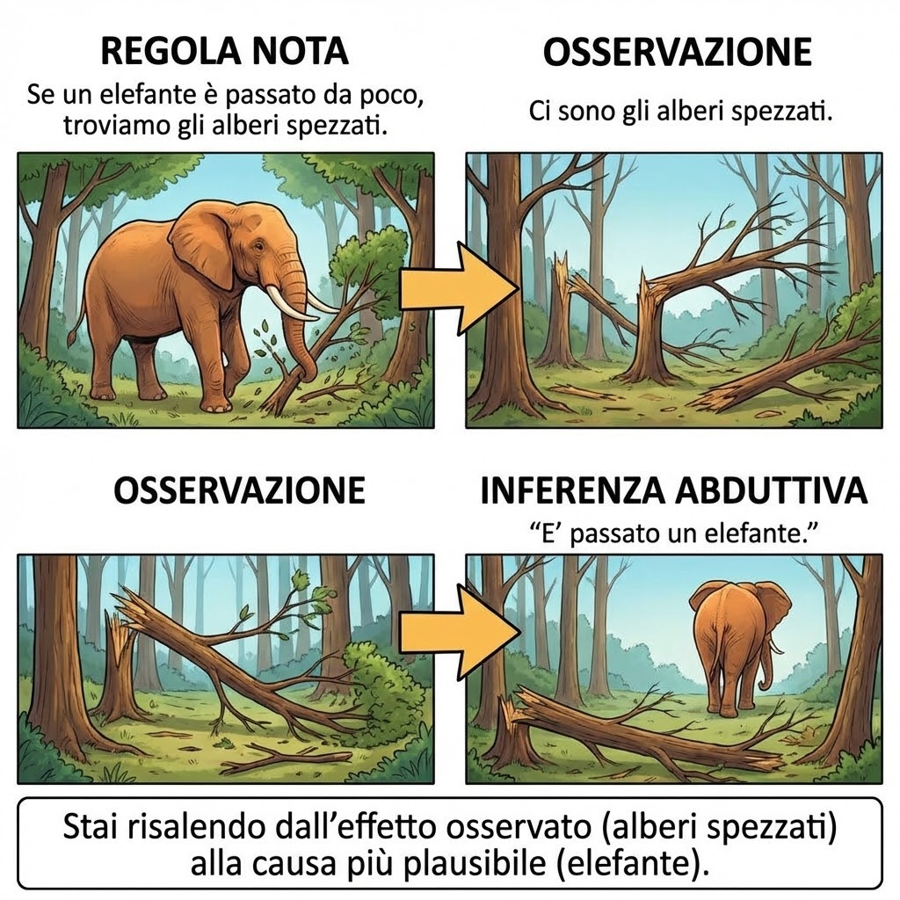
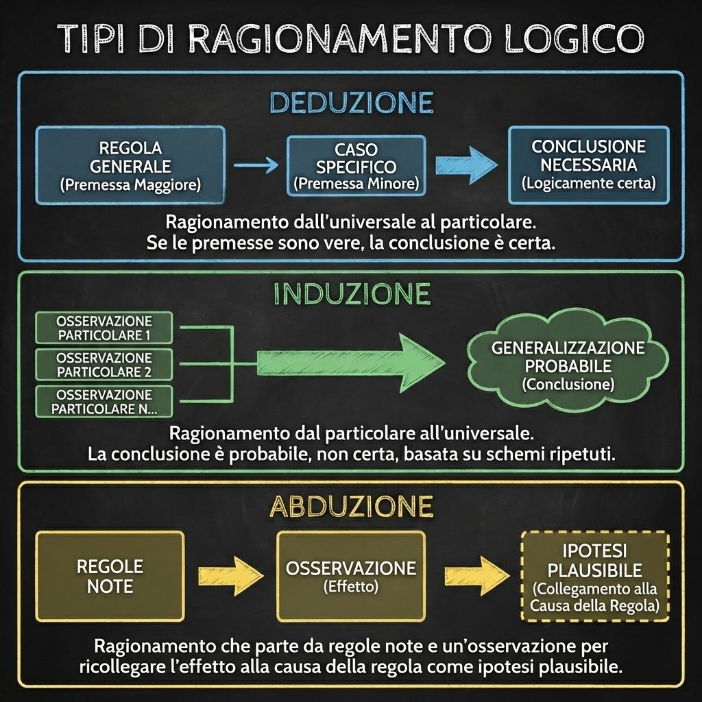
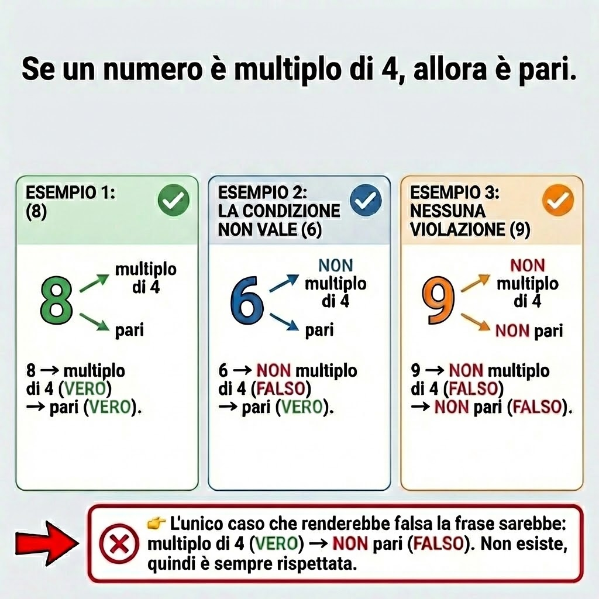
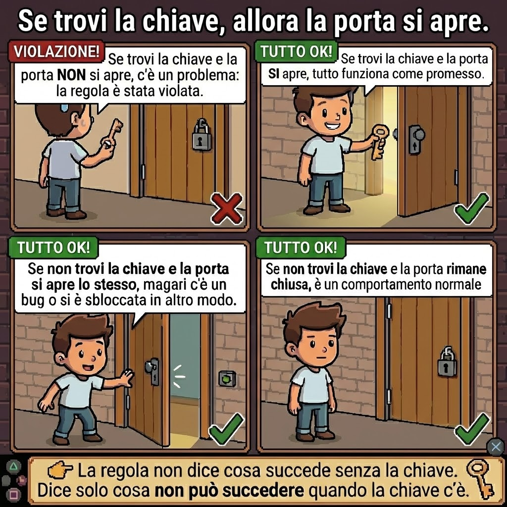

La Logica_
nell'Informatica
Rappresentare e aumentare la conoscenza all'interno del computer.
Le Origini Filosofiche
Dalle
origini aristoteliche fino al XIX secolo, la logica è stata utilizzata prevalentemente in ambito
filosofico, soprattutto per sostenere argomentazioni di tipo metafisico.
In questa lunga
fase storica, la logica rimane strettamente legata allo studio del pensiero umano e alla
riflessione sulla realtà .
fig_1.0: Riflessione

Auguste Rodin
Le Penseur (1902)
fig_1.1: Calcolo

Gottfried W. Leibniz
1646 - 1716
La Svolta Matematica
A partire dalla seconda metà dell'Ottocento, tuttavia, si avvia una trasformazione profonda: la logica inizia a emanciparsi dalla psicologia e dalla metafisica e ad assumere un carattere sempre più matematico e formale. Uno dei primi tentativi di concepire la logica come un vero e proprio calcolo risale a Gottfried Wilhelm Leibniz (1646 - 1716). Egli immaginava un linguaggio simbolico universale capace di trattare i ragionamenti nello stesso modo in cui l'algebra tratta le operazioni sui numeri. In una celebre intuizione, Leibniz affermava quanto segue:
"Le verità vengono dedotte dalla mente umana in virtù di un metodo di calcolo come nell'aritmetica e nell'algebra e quindi, quando sorgeranno controversie fra due filosofi, non sarà più necessaria una discussione. Sarà sufficiente che essi prendano in mano le penne, si siedano di fronte agli abachi e si dicano l'un l'altro: calculemus!"
La Formalizzazione Logica

George Boole
1815 - 1864
Questa visione trova una prima realizzazione concreta nel XIX secolo con George Boole, considerato il fondatore della logica matematica. Boole applicò alla logica aristotelica i metodi dell'algebra, trasformando le proposizioni in oggetti formali su cui eseguire operazioni. In questo modo rese finalmente operativa l'idea leibniziana di una logica come calcolo.

Logica Binaria

Frege & Russell
Fondamenti
Il progetto viene poi ampliato e raffinato da Gottlob Frege (1848 - 1925), che sviluppò un linguaggio logico estremamente preciso. L'obiettivo era fondare l'intera matematica sulla logica. Su questa linea lavorò Bertrand Russell (1872 - 1970) con i Principia Mathematica, tentando di derivare la matematica da principi logici ed evidenziando al contempo i limiti dei sistemi logici dell'epoca (Paradosso di Russell).

Principia Mathematica (1+1=2)

Giuseppe Peano
1858 - 1932
Infine, Giuseppe Peano contribuì a conferire alla logica una notazione simbolica rigorosa e standardizzata, rendendo più chiara ed efficace l'espressione formale dei concetti matematici. Grazie a questi sviluppi, si gettarono le basi della logica formale moderna.

Principio di induzione
La Correttezza Logica
In questo nuovo quadro, la logica si occupa della correttezza dei ragionamenti: un ragionamento è corretto quando ogni passaggio è valido e la conclusione segue necessariamente dalle premesse secondo regole precise. La logica non si interessa al contenuto delle affermazioni, ma alla forma del ragionamento stesso.
Ragionamento Corretto
Premessa 1: Tutti i mammiferi sono animali.
Premessa 2: Il cane è un mammifero.
Conclusione: Il cane è un animale.
👉 Questo ragionamento è logicamente corretto perché la conclusione segue necessariamente dalle premesse. Se le premesse sono vere, la conclusione non può essere falsa. La forma del ragionamento è valida, indipendentemente dal contenuto specifico.
Ragionamento Scorretto
Premessa 1: Tutti i mammiferi sono animali.
Premessa 2: Il cane è un animale.
Conclusione: Il cane è un mammifero.
👉 Questo ragionamento è logicamente scorretto, anche se la conclusione è vera nella realtà . La forma del ragionamento non garantisce che la conclusione derivi dalle premesse: potrebbero esistere animali che non sono mammiferi. Il problema non è il contenuto, ma la struttura logica.
Dal Linguaggio all'Istruzione
Il punto di partenza per comprendere l'informatica e la logica matematica è accettare un fatto fondamentale: il linguaggio umano, detto anche linguaggio naturale, non è progettato per essere interpretato in modo univoco dalle macchine.
L'Essere Umano
Noi esseri umani siamo estremamente abili nel usare il contesto, l'intuizione e il "non detto" per comprendere una frase. Spesso completiamo automaticamente le informazioni mancanti e scegliamo l'interpretazione più plausibile senza neppure rendercene conto.
Il Computer
Un computer, invece, non possiede queste capacità : non intuisce, non interpreta, non "immagina" cosa intendiamo dire. Può solo eseguire istruzioni che siano precise, esplicite e prive di ambiguità .
L'Ambiguità Semantica
Uno dei problemi più evidenti del linguaggio naturale è l'ambiguità semantica, che si verifica quando una frase, pur essendo grammaticalmente corretta, può essere interpretata in più modi.
Esempio Classico
"Ho visto un uomo col binocolo."

Interpretazione A
Io ho usato il binocolo per osservare l'uomo.
Interpretazione B
Ho visto un uomo che aveva con sé, o indossava, un binocolo.
Per questo motivo, il passaggio dal linguaggio naturale alla logica formale può essere visto come un processo sistematico di eliminazione dell'ambiguità .
La Sfida della Formalizzazione
La transizione dal linguaggio naturale — ricco, flessibile ed espressivo, ma inevitabilmente ambiguo — alla rigidità dei linguaggi formali costituisce una delle sfide intellettuali più profonde della logica matematica, dell'informatica teorica e della filosofia del linguaggio.
Questo processo, chiamato formalizzazione, non consiste semplicemente nel sostituire parole con simboli, ma richiede un'analisi accurata della struttura del pensiero stesso.

Ludwig Wittgenstein
Tractatus Logico-Philosophicus
"La proposizione logica aspira a essere un'immagine dei fatti."
fig_1.4: Isomorfismo Strutturale
Una rappresentazione in cui la struttura logica riflette rigorosamente la configurazione della realtà .
Il Motore del Ragionamento
L'Inferenza
Quando ragioniamo, stiamo facendo qualcosa di molto preciso: stiamo passando da ciò che già sappiamo a qualcosa di nuovo. Questo passaggio si chiama inferenza.
Un’inferenza è un processo attraverso il quale, a partire da alcuni enunciati assunti come punto di partenza — le premesse — arriviamo ad affermare un altro enunciato, la conclusione. In altre parole, è il meccanismo che trasforma informazione in nuova informazione.
La logica nasce proprio per studiare questi passaggi: non tanto il contenuto, ma la struttura del passaggio.
Validità e Verità
Un’inferenza è detta valida quando è impossibile che le premesse siano vere e la conclusione sia falsa. Questo significa che la verità delle premesse “trascina con sé” la verità della conclusione.
In termini più tecnici, diciamo che un argomento è valido se, in ogni modello in cui le premesse risultano vere, anche la conclusione risulta vera. La conclusione, in questo caso, è una conseguenza logica delle premesse.
La deduzione è un meccanismo che conserva la verità.
I tre grandi motori del ragionamento
Possiamo distinguere tre modalità fondamentali con cui la mente (e anche l’intelligenza artificiale) produce inferenze: ognuna ha una direzione diversa, un diverso grado di certezza e un ruolo epistemologico unico.
1. Deduzione
Il ragionamento della necessità
La deduzione è il ragionamento della necessità. È la forma più rigorosa e strutturalmente sicura, in cui il movimento logico va rigorosamente dal generale al particolare. Si parte da una regola universale e la si applica a un caso specifico: se la struttura dello schema è corretta e le premesse sono vere, la conclusione è inevitabile.
Dal punto di vista epistemologico, la deduzione non "crea" nuova informazione: si limita a rendere esplicito ciò che era già contenuto nelle premesse. Tuttavia, la sua utilità cognitiva è immensa, poiché chiarisce relazioni che altrimenti resterebbero oscure o non esplicitate.
Esempio: Sillogismo
• Tutti gli uomini sono mortali.
• Socrate è un uomo.
∴ Socrate è mortale.
Square: Deduzione

2. Induzione
Il ragionamento della generalizzazione
L'induzione va nella direzione opposta: procede dal particolare al generale. Consiste nell'osservare una serie di casi specifici e nel tentare di formulare una regola che li riassuma tutti. Non si tratta di una necessità logica, ma di una generalizzazione empirica.
Come mostrato da David Hume, l'induzione comporta sempre un "salto": il fatto che un fenomeno si sia verificato costantemente finora non garantisce che accadrà necessariamente in futuro. Eppure, essa è il cuore del Machine Learning e della scienza: non conserva la verità, ma scommette sulla regolarità del mondo.
Esempio: Il Problema di Hume
• Questo cigno è bianco. Anche il prossimo...
• Tutti i cigni osservati finora sono bianchi.
Conclusion: Tutti i cigni sono bianchi.
(Fino a prova contraria: il cigno nero)
Square: Induzione

3. Abduzione
Il ragionamento della spiegazione
L'abduzione è il ragionamento della spiegazione. Spesso meno intuitiva dei primi due, procede dall'effetto alla causa: si osserva un fatto sorprendente o inaspettato e si cerca l'ipotesi che lo renderebbe comprensibile.
Formalizzata da C.S. Peirce, l'abduzione è il vero motore della scoperta scientifica e del debugging: non garantisce la verità, ma suggerisce la migliore spiegazione possibile per le prove a disposizione. È creativa per natura, ma intrinsecamente rischiosa poiché soggetta a revisione.
Esempio: Diagnosi / Debug
• Se la batteria fosse scarica, l'auto non partirebbe.
• L'auto non parte.
Forse: La batteria è scarica.
Square: Abduzione

Placeholder: Immagine Orizzontale Panorama (Meccanismi del Pensiero)

| Metodo | Funzione | Certezza | Espansione Conoscenza |
|---|---|---|---|
| Deduzione | Coerenza / Rigore | Assoluta (Sia premesse vere) | Bassa (Esplicita l'implicito) |
| Induzione | Apprendimento / Regole | Probabilistica | Alta (Generalizza) |
| Abduzione | Scoperta / Ipotesi | Bassa (Fallibile) | Altissima (Ipotesi Nuove) |
Ragionamento umano e Intelligenza Artificiale
IA Simbolica
Usa la deduzione per applicare regole rigide e logica formale (es. motori di inferenza).
Machine Learning
Si basa sull'induzione per estrarre pattern e regole generali da enormi quantità di dati.
Agenti Intelligenti
Utilizzano l'abduzione per interpretare prove incerte e generare le migliori spiegazioni possibili.
Capire questi tre motori significa comprendere come costruiamo conoscenza, sia biologica che sintetica, in condizioni di incertezza.
L'IA Simbolica
L'Intelligenza Artificiale simbolica, spesso chiamata anche GOFAI (Good Old-Fashioned AI o "vecchia e buona IA"), è l'approccio classico e tradizionale all'intelligenza artificiale. Si basa sull'idea fondamentale che l'intelligenza e il ragionamento umano possano essere simulati manipolando simboli attraverso regole logiche esplicite.
In parole povere:
Invece di "imparare" da enormi quantità di dati come fa l'IA moderna (Machine Learning), l'IA simbolica viene programmata a mano fornendole la conoscenza del mondo e le regole per usarla.
Punti di Forza
Trasparenza
(Explainability): È un sistema a "scatola bianca". Se l'IA prende una decisione, puoi tracciare esattamente ogni singolo passaggio logico che ha portato a quella conclusione. Questo è cruciale in settori come la medicina o la giurisprudenza.
Precisione
Coerenza e precisione: Non "allucina" e non tira a indovinare. Se le regole e i dati di partenza sono corretti, la conclusione sarà matematicamente e logicamente infallibile.
Efficienza
Efficienza con pochi dati: Non ha bisogno di analizzare milioni di esempi per capire un concetto; basta scrivergli la regola una volta sola.
I Grandi Limiti
(Perché è stata superata dal Machine Learning?)
Nonostante i successi iniziali (come il computer Deep Blue di IBM che sconfisse il campione di scacchi Garry Kasparov nel 1997), l'IA simbolica ha incontrato ostacoli insormontabili nel mondo reale:
Rigidità
L'IA simbolica non sa gestire l'ambiguità, il sarcasmo, o dati non strutturati come immagini e suoni. Il mondo reale è caotico e pieno di eccezioni.
"Collo di bottiglia"
Per far funzionare un'IA simbolica, programmatori ed esperti umani devono scrivere manualmente ogni singola regola. È umanamente impossibile codificare tutto per compiti banali (es. guidare un'auto).
Mancanza di Apprendimento
Un'IA puramente simbolica non impara dai propri errori e non si adatta a situazioni nuove se non viene riprogrammata.
Il Futuro: Sistemi Ibridi
Oggi, l'IA simbolica non è scomparsa, ma viene spesso integrata in sistemi ibridi (Neuro-symbolic AI), dove le moderne reti neurali si occupano di percepire il mondo (es. riconoscere gli oggetti) e la logica simbolica aiuta a ragionare in modo sicuro e tracciabile su ciò che è stato percepito.
Confronto Tecnologico
IA Simbolica (Logica)
Basata su regole esplicite e ragionamento deduttivo.
IA Connessionista (Reti Neurali)
Basata su apprendimento dai dati e pattern statistici.
Historical Timeline
Logic Theorist
Primo programma capace di dimostrare teoremi matematici usando la logica.
Sistemi Esperti
Programmi che codificavano la conoscenza di esperti umani in regole IF-THEN.
Neuro-Symbolic
Unire la robustezza della logica con la flessibilità del Deep Learning.
IL Prolog
Oltre alle basi teoriche, il Prolog (Programming in Logic) è lo strumento principale per sperimentare questo paradigma. In Prolog, il programmatore descrive cosa è vero (la base di conoscenza) e lascia al motore inferenziale il compito di trovare la soluzione.21
Fatti (Facts)
Asserzioni incondizionate che descrivono verità atomiche.
colore(neve, bianco).
Regole (Rules)
"La Testa è vera SE il Corpo è vero" (Testa :- Corpo).
4.2 Unificazione e Backtracking
Il cuore dell'esecuzione in Prolog è l'algoritmo di Unificazione, che cerca di rendere uguali due termini sostituendo le variabili con valori concreti. Se una strada porta a un fallimento, il sistema esegue automaticamente il Backtracking: torna indietro e prova un'alternativa.
Questo dimostra l'esplorazione di alberi di ricerca logica senza necessità di cicli o stack espliciti da parte del programmatore.15
Genitore(mario, Z)? → Match: Z=luca
Genitore(luca, Y)? → Fallimento
Genitore(mario, Z)? → Match: Z=anna
Genitore(anna, Y)? → Successo: Y=pietro
Regole e Strategie
Il Cuore del Ragionamento
Il meccanismo più antico e intuitivo è il Modus Ponens: ((A -> B) && A) |- B. Se so che "Se piove prendo l'ombrello" e so che "Piove", posso inferire meccanicamente "Prendo l'ombrello".14 Questa regola è alla base dei sistemi di produzione "forward chaining".
Tuttavia, per l'automazione su vasta scala, la regola regina è la Risoluzione, introdotta da Alan Robinson nel 1965.15 La risoluzione opera su clausole disgiuntive e afferma che da (A v B) e (~A v C) si può inferire (B v C). La potenza di questa regola sta nella sua capacità di essere utilizzata nella refutazione: per dimostrare che una tesi è vera, si assume che sia falsa (neghiamo la tesi), la si aggiunge alla base di conoscenza e si usa la risoluzione per cercare di derivare una contraddizione (clausola vuota). Se si trova una contraddizione, l'ipotesi iniziale di falsità era errata, dunque la tesi originale è vera. Questo è il cuore pulsante del linguaggio Prolog e di molti dimostratori automatici di teoremi.
Forward Chaining
"Data-Driven"
Si parte dai fatti noti e si applicano tutte le regole possibili per dedurre nuovi fatti, procedendo a cascata.19
Esempio Reale (Domotica)
Input: Temperature > 70°C
→ Active Fire Alarm
→ Start Sprinklers
Backward Chaining
"Goal-Driven"
Si parte da un'ipotesi e si lavora a ritroso per vedere se i fatti noti la supportano.14
Esempio Reale (Diagnosi)
Hypothesis: "Patient has Flu?"
← Rule check: Result in Flu?
← Sub-goals: Fever? AND Cough?
Analisi del Pensiero
Come il Computer "Pensa"?
"Una volta tradotte le frasi in formule, come fa un computer a derivare nuove verità senza conoscere il significato delle parole?"
Istanziazione Universale
"Tutti gli uomini sono mortali."
∀x (Uomo(x) → Mortale(x))
"Socrate è un uomo."
Uomo(Socrate)
La macchina applica la regola generale all'oggetto specifico Socrate, sostituendo la variabile x ovunque appaia:
Risultato Finale
Mortale(Socrate)
Relazioni Complesse
Esempio Pratico
Un sistema intelligente usa l'inferenza per generare risposte che non sono scritte in memoria, ma derivano logicamente dai dati che possiede.
∀x, y, z ((Genitore(x, y) ∧ Genitore(y, z)) → Nonno(x, z))
- Genitore(Abramo, Isacco)
- Genitore(Isacco, Giacobbe)
Nuova Verità Derivata
Nonno(Abramo, Giacobbe)
Logica vs Linguaggio
Il primo passo fondamentale per formalizzare un pensiero è distinguere tra ciò che è logico e ciò che è meramente linguistico. La logica classica si occupa esclusivamente di enunciati dichiarativi, ossia frasi che possono essere vere o false.
"Il gatto dorme sul tappeto."
"Chiudi la finestra!"
"Che ore sono?"
"La radice quadrata di 16 è 4."
"Speriamo che domani ci sia il sole."
Analisi
Proposizioni Logiche (1, 4)
Sono le uniche frasi a cui è possibile attribuire un valore di verità : VERA o FALSA.
Non Proposizioni (2, 3, 5)
Imperativi, domande e desideri non descrivono uno stato di cose verificabile, quindi non hanno valore di verità .
La logica proposizionale inizia quando il linguaggio smette di essere performativo o interrogativo e diventa descrittivo, concentrandosi su ciò che può essere vero o falso.
La Logica Proposizionale
La logica proposizionale è un sistema formale che studia come combinare proposizioni atomiche e come determinare il valore di verità di frasi più complesse a partire dal valore di verità delle proposizioni di base: il valore di verità di una proposizione composta dipende esclusivamente dal valore di verità delle sue componenti atomiche e dalla definizione del connettivo usato.
"Non le interessa di cosa parlano le proposizioni, ma solo se sono vere o false e come sono collegate tra loro."
In questo contesto, le proposizioni atomiche diventano i mattoni fondamentali del ragionamento. A partire da esse, costruiamo proposizioni composte usando operatori logici secondo regole precise e non ambigue.
Cuore dell'Informatica
In questo modo, la logica
proposizionale permette di astrarre dal contenuto linguistico e di trattare le
proposizioni
come entità matematiche sulle quali è possibile applicare regole di inferenza rigorose,
costituendo la base per sistemi più complessi di ragionamento logico e informatico.
È
il
linguaggio con cui un computer "ragiona", valuta condizioni e prende decisioni.
Equivalenza Logica
Due proposizioni o espressioni logiche sono equivalenti se hanno la stessa tavola di verità. Se due espressioni sono equivalenti, sono sempre entrambe vere o entrambe false nello stesso momento e perciò possono essere sostituite l'una all'altra.
Tautologie
Proposizione sempre vera, qualunque sia il valore di verità delle proposizioni atomiche.
Esempi
- “Oggi piove oppure non piove.”
- “Se Maria è a scuola, allora è a scuola.”
Questo principio è alla base della logica classica e ci permette di usare il ragionamento per esclusione e le dimostrazioni per assurdo.
Contraddizioni
Proposizione sempre falsa, qualunque sia il valore di verità delle proposizioni atomiche.
Esempi
- “Oggi piove e non piove.”
- “Esco di casa se e solo se non esco di casa.”
Riconoscere una contraddizione è fondamentale per individuare errori nei ragionamenti o incoerenze nei sistemi logici.
Le Tavole di Verità
Una tavola di verità è una tabella matematica usata nella logica per determinare se una proposizione composta è vera o falsa, basandosi su tutte le possibili combinazioni dei valori di verità delle sue parti atomiche. È lo strumento "meccanico" con cui calcoliamo il valore di qualsiasi espressione logica.
La Struttura
-
1
Le Righe ($2^n$): Il numero di righe dipende dal numero di proposizioni atomiche ($n$). Se abbiamo 2 proposizioni (P, Q), le righe saranno $2^2 = 4$. Con 3 proposizioni, $2^3 = 8$.
-
2
Le Colonne: Le prime colonne mostrano gli input (le proposizioni atomiche), mentre l'ultima mostra il risultato finale dell'operazione.
Perché usarle?
Costruzione di una Tavola
| Input P | Input Q | P ∧ Q |
|---|---|---|
| V | V | V |
| V | F | F |
| F | V | F |
| F | F | F |
I Connettivi Logici
I connettivi logici sono operatori che permettono di costruire proposizioni complesse a partire da proposizioni più semplici, mettendo in relazione i loro valori di verità. Nella logica proposizionale classica il significato di ogni connettivo è definito esclusivamente tramite la sua tavola di verità, indipendentemente dalle sfumature del linguaggio naturale.
Negazione
NOT — Operatore unario
¬P, ~P, P
La negazione inverte il valore di verità della proposizione a cui si applica: ciò che è vero diventa falso, e viceversa.
Esempi
"Lea non è stanca"
"Non è vero che piove"
| P | ¬ P |
|---|---|
| F | V |
| V | F |
Congiunzione
AND — Operatore binario
P ∧ Q, P · Q, P & Q
La congiunzione è vera solo se entrambe le proposizioni che la compongono sono vere. Basta che una sia falsa perché l'intera preposizione sia falsa.
Esempi
"Il sole splende, ma fa freddo"
"Sto studiando nonostante io sia stanco"
"Mario è alto, gentile, bello e intelligente"
"Stasera mangio pizza e patatine"
| P | Q | P ∧ Q |
|---|---|---|
| F | F | F |
| F | V | F |
| V | F | F |
| V | V | V |
La traduzione della congiunzione rivela la prima grande perdita di sfumatura nel passaggio dal naturale al formale. In italiano, dire "Il sole splende, ma fa freddo" introduce una sfumatura avversativa: suggerisce che il fatto che faccia freddo è in contrasto con la presenza del sole. Tuttavia, per la logica proposizionale classica, questa sfumatura linguistica è irrilevante.
Si noti che la congiunzione è commutativa in logica, mentre nel linguaggio naturale l'ordine può implicare una sequenza temporale ("Si è sposata e ha avuto un figlio" è diverso da "Ha avuto un figlio e si è sposata").
Disgiunzione Inclusiva
OR — Operatore binario
P ∨ Q, P + Q
È vera se almeno una delle due proposizioni è vera. È falsa solo quando entrambe sono false.
Esempi
"Per essere assunto devi conoscere l'inglese o il francese"
"Puoi contattarmi via mail, ma anche chiamarmi"
"Se fai goal oppure se vinci la partita, ti do 5 euro!"
| P | Q | P ∨ Q |
|---|---|---|
| F | F | F |
| F | V | V |
| V | F | V |
| V | V | V |
—
Molto utile in informatica
Disgiunzione Esclusiva
XOR — Operatore binario
P ⊕ Q
Lo XOR è vero solo se una e una sola delle proposizioni è vera. Se sono entrambe vere o entrambe false, lo XOR è falso.
Esempi
"Vieni oggi o domani"
"Puoi consegnare il progetto scritto oppure fare l'orale"
"Scegli solo uno tra tema A e tema B"
| P | Q | P ⊕ Q |
|---|---|---|
| F | F | F |
| F | V | V |
| V | F | V |
| V | V | F |
Si noti come nella lingua italiana la
particella "o" incorpori entrambi i significati logici.
Il latino, invece, distingueva lessicalmente due concetti:
1. Vel (Disgiunzione Inclusiva): "L'uno, o l'altro, o entrambi".
2. Aut (Disgiunzione Esclusiva):"O l'uno o l'altro, ma non entrambi".
Equivalenza Formale:
P ⊕ Q ≡ (P ∨ Q) ∧ ¬(P ∧ Q)
—
Molto utile in informatica
NAND
NOT AND — Operatore binario
¬(P ∧ Q), P ∧ Q
Corrisponde alla negazione dell'AND, quindi al suo opposto: è quindi vera quando almeno una delle proposizioni è falsa. Esprime dunque che entrambi i concetti non possono essere veri insieme.
Esempi
"Non puoi parlare e mangiare nello stesso momento!"
"Non è vero che io e Marco abbiamo il debito"
| P | Q | ¬(P ∧ Q) |
|---|---|---|
| F | F | V |
| F | V | V |
| V | F | V |
| V | V | F |
Equivalenza formale:
¬(P ∧ Q) ≡ ¬P ∨ ¬Q (Legge di De Morgan)
—
Molto utile in informatica
NOR
NOT OR — Operatore binario
¬(P ∨ Q), P ∨ Q
Corrisponde alla negazione dell'OR, quindi al suo opposto: è quindi vera quando entrambe le proposizioni sono false. Esprime dunque che entrambi i concetti devono essere falsi.
Esempi
"Né io né Luca abbiamo il libro"
"Non voglio il gelato e nemmeno la torta"
| P | Q | ¬(P ∨ Q) |
|---|---|---|
| F | F | V |
| F | V | F |
| V | F | F |
| V | V | F |
Equivalenza formale:
¬(P ∨ Q) ≡ ¬P ∧ ¬Q (Legge di De Morgan)
Implicazione
IF ... THEN — Operatore binario
P → Q, P ⇒ Q
Formalizza il costrutto "se… allora…".
Definiamo P l'antecedente o la premessa e Q il conseguente o la conclusione.
Essa risulta falsa solo quando l'antecedente è vero e il conseguente è
falso.
Esempi
"Se piove, allora il terreno è bagnato."
"Il superamento dell’esame implica che tu abbia studiato abbastanza."
"Ti comprerò quel gioco a condizione che tu faccia il bravo"
"La lezione inizia quando suona la campanella"
| P | Q | P → Q |
|---|---|---|
| F | F | V |
| F | V | V |
| V | F | F |
| V | V | V |
Ex falso quodlibet (dal falso segue qualsiasi cosa). "Se gli asini volano, allora io sono Superman" è una frase vera: se si parte da una premessa falsa, puoi costruire un ragionamento valido che porti a qualsiasi conclusione. Il concetto fondamentale è che una implicazione è come una regola: dice quando è vietato sbagliare, non quando è obbligatorio riuscire.
Esempio 1

Esempio 2

Esempio 3
Sfumature Linguistiche
L’italiano offre molti modi diversi per esprimere una relazione condizionale, ma non tutti hanno la stessa struttura logica. Per tradurre correttamente in logica proposizionale è fondamentale capire qual è la condizione sufficiente e qual è la condizione necessaria.
1 Se P, allora Q – La condizione sufficiente
P → Q
P è condizione sufficiente per Q, ovvero se si verifica P allora si verifica sicuramente Q.
Esempio 1
Se piove, prendo l’ombrello.
Il fatto che piova è sufficiente per prendere l'ombrello; in altre parole, se piove prendo sicuramente l'ombrello.
Esempio 2
Per entrare al cinema devi avere il biglietto.
Il fatto che tu possegga il biglietto è sufficiente per poter entrare al cinema; in altre parole, se hai il biglietto puoi sicuramente entrare al cinema.
2 Q solo se P – La condizione necessaria
Q → P
P è condizione necessaria per Q, ovvero Q non può verificarsi senza che si verifichi anche P.
Esempio 1
Per votare devi essere maggiorenne.
Non puoi votare se non sei maggiorenne, ma essere maggiorenne non ti garantisce di poter votare (per esempio, se non hai la tessera elettorale).
Esempio 2
Se non hai il biglietto, non puoi entrare al cinema.
Avere il biglietto è necessario per entrare al cinema, ma anche avendolo potresti non entrare (per esempio, se è un film vietato ai minori).
Equivalenza
formale:
Q → P ≡ ¬P → ¬Q (legge di
contrapposizione)
3 P a meno che Q – L'eccezione
¬Q → P
Q è un'eccezione al normale verificarsi di P, ovvero se Q non si verifica, allora P si verifica.
Esempio 1
Il bar è sempre aperto, ma non il lunedì.
Il bar è di norma aperto, ma l'eccezione a questo fatto è l'essere lunedì.
Esempio 2
Usciamo, a meno che non piova.
L'unico caso in cui non usciamo è quando piove.
Equivalenza
formale:
¬Q → P ≡ ¬(¬Q) ∨ P ≡ Q ∨ P
(Definizione canonica implicazione)
Doppia Implicazione
IF AND ONLY IF — Operatore binario
P ⟷ Q, P = Q
Rappresenta il concetto tale per cui succeda una cosa solo se succede anche l'altra. E' dunque vera quando P e Q hanno lo stesso valore di verità.
Esempi
"Un numero è pari se e solo se è divisibile per due"
"Mangio una pizza solo quando e ogni volta che guardo una serie tv"
| P | Q | P ⟷ Q |
|---|---|---|
| F | F | V |
| F | V | F |
| V | F | F |
| V | V | V |
È l'equivalente logico dell'uguaglianza. Corrisponde a (P → Q) ∧ (Q → P).
Regole di Inferenza
Nel ragionamento quotidiano, in matematica e in informatica non ci limitiamo a elencare frasi vere o false: vogliamo capire cosa possiamo concludere a partire da ciò che sappiamo. Le regole di inferenza sono schemi che garantiscono che una conclusione segua correttamente dalle premesse tramite un ragionamento deduttivo: grazie ad esse, trasformiamo ipotesi in conclusioni sicure, evitando errori logici comuni. Studiare queste regole significa imparare a riconoscere e costruire argomentazioni rigorose e coerenti, fondamentali nella logica formale e nel pensiero critico quotidiano.
Modus Ponens
Forma logica
A → B, A ⊢ B
Cosa dice (idea chiave)
Se una certa condizione è sufficiente per ottenere un risultato, e quella condizione si verifica davvero, allora il risultato deve verificarsi. È la regola più intuitiva: se una condizione è sufficiente e si verifica, allora si verifica di certo anche l'effetto.
Esempio
“Se studio, passo l’esame.”
“Studio.”
“Passo l’esame.”
S → P
S
P
Modus Tollens
Forma logica
A → B, ¬B ⊢ ¬A
Cosa dice (idea chiave)
Se una certa condizione è sufficiente per ottenere un risultato, e quel risultato non si verifica, allora la condizione non può essersi verificata. È il ragionamento “a contrario”: se l’effetto non c’è, la causa sufficiente non c’è stata.
Esempio
“Se studio, passo l’esame.”
“Non passo l’esame.”
“Non ho studiato.”
S → P
¬P
¬S
Sillogismo ipotetico
Forma logica
A → B, B → C ⊢ A → C
Cosa dice (idea chiave)
Se una condizione A porta a B, e B porta a C, allora A porta a C. Permette di collegare ragionamenti a catena.
Esempio
“Se studio, capisco gli argomenti.”
“Se capisco gli argomenti, passo l’esame.”
“Se studio, passo l’esame.”
S → C
C → P
S → P
Sillogismo disgiuntivo
Forma logica
A ∨ B, ¬A ⊢ B
Cosa dice (idea chiave)
Se almeno una tra due condizioni è vera e sappiamo che una non lo è, allora l’altra deve essere vera. È il ragionamento “o… oppure…”.
Esempio
“O vado al cinema o vado a cena.”
“Al cinema non vado.”
“Vado a cena.”
C ∨ N
¬C
N
Risoluzione
Forma logica
(A ∨ B), (¬A ∨ C) ⊢ B ∨ C
In alternativa: (A ∨ B), (A -> C) ⊢ B ∨ C
Cosa dice (idea chiave)
Permette di “eliminare una contraddizione” tra due frasi e combinare i restanti elementi. Anche senza sapere se effettivamente quella proposizione contraddittoria sia vera o falsa, abbiamo dedotto una possibilità certa.È la regola chiave dei dimostratori automatici e dell’IA simbolica.
Esempio
“Metto la camicia oppure metto il maglione.”
“Non metto la camicia oppure metto la cravatta (questo equivale a dire che se metto la camicia, allora metto la cravatta).”
“Metto il maglione oppure metto la cravatta”
C ∨ M
¬C ∨ T (equivalente a C -> T)
M ∨ T
Eliminazione della congiunzione
Forma logica
A ∧ B ⊢ A e A ∧ B ⊢ B
Cosa dice (idea chiave)
Se sappiamo che due cose sono vere insieme, possiamo dedurre che ciascuna è vera singolarmente.
Esempio
“Il computer è acceso e connesso a Internet.”
“Il computer è acceso.”
“Il computer è connesso a Internet.”
C ∧ I
C
I
Introduzione congiunzione
Forma logica
A, B ⊢ A ∧ B
Cosa dice (idea chiave)
Se due proposizioni sono vere singolarmente, possiamo unirle in un’unica affermazione congiunta.
Esempio
“Ho studiato.”
“Ho fatto esercizi.”
“Ho studiato e ho fatto esercizi.”
S
E
S ∧ E
Introduzione disgiunzione
Forma logica
A ⊢ A ∨ B
Cosa dice (idea chiave)
Se una proposizione è vera, allora è vero anche che “quella proposizione o un’altra” è vera. Serve a costruire affermazioni più generali.
Esempio
“Ho studiato.”
“Ho studiato o ho copiato.”
S
S ∨ C
I limiti della Logica Proposizionale
La logica proposizionale è uno strumento potente per formalizzare ragionamenti basati su proposizioni intere collegate da connettivi logici. Tuttavia, presenta un limite strutturale fondamentale: tratta le frasi come "scatole nere", senza analizzarne la struttura interna.
Frase naturale
"Socrate è mortale"
In logica proposizionale
P
❌ Cosa perdiamo:
- • Chi sia Socrate
- • Cosa significhi essere mortale
- • La struttura interna della frase
La frase è ridotta a un'etichetta che può essere solo vera o falsa.
Questo approccio funziona finché dobbiamo combinare frasi intere. Ma mostra rapidamente i suoi limiti quando vogliamo rappresentare strutture interne, relazioni o generalizzazioni.
Il problema della Quantificazione
"Tutti gli studenti di informatica usano il computer."
❌ In logica proposizionale non esiste alcun modo per esprimere "tutti" o "qualcuno"
L'unico modo: elencare ogni singolo caso
P₁: "Marco è studente e usa il computer"
P₂: "Lucia è studente e usa il computer"
P₃: "Ahmed è studente e usa il computer"
…
❌ Impraticabile
L'elenco potrebbe essere infinito! Elencare ogni singolo casp uno per uno è irrealistico: in molti contesti il numero di casi può essere molto grande o addirittura indefinito. Inoltre, l’insieme potrebbe cambiare nel tempo (nuovi studenti si iscrivono, altri si ritirano), rendendo necessario aggiornare continuamente l’elenco. Un metodo che richiede di scrivere ogni caso singolarmente non è sostenibile né efficiente.
❌ Non generale
Ogni caso è separato! Scrivendo proposizioni separate (P₁, P₂, P₃, …) non stiamo esprimendo una regola valida per tutti, ma solo una serie di affermazioni indipendenti. Manca un principio unificante che colleghi i casi tra loro. Non emerge una legge generale, ma soltanto una collezione di fatti isolati.
Cosa manca:
"Per ogni studente x …"
Manca la capacità di fare affermazioni generali su insiemi di oggetti.
L'assenza di Relazioni
Un secondo limite fondamentale riguarda le relazioni tra oggetti.
La logica proposizionale non può rappresentare strutture del tipo:
"X è amico di Y"
"Mario è più alto di Luca"
"Roma è capitale di Italia"
Approccio proposizionale
P = "Romeo ama Giulietta"
❌ Perdiamo completamente la struttura interna:
La logica proposizionale non consente di ragionare su queste componenti.
L'impossibilità di isolare Oggetti e Proprietà
Il terzo limite fondamentale è l'incapacità di distinguere tra l'oggetto (l'individuo di cui parliamo) e la proprietà (ciò che diciamo di esso). Nella logica proposizionale, una frase è un blocco atomico: non possiamo "guardarci dentro".
"Socrate è un uomo"
P
"Platone è un uomo"
Q
"Aristotele è un uomo"
R
❌ La perdita di informazione
Sebbene tutte queste frasi parlino della stessa proprietà ("essere un uomo"), in logica proposizionale esse diventano tre lettere separate (P, Q, R) senza alcun legame logico visibile. Il sistema non capisce che il concetto di "uomo" è lo stesso in tutti i casi: ogni volta che cambiamo il soggetto, dobbiamo inventare una variabile nuova, perdendo la possibilità di generalizzare o di creare regole basate sulle categorie.
Cosa manca:
"Proprietà(Oggetto)"
Manca la capacità di scomporre la frase per riconoscere che diversi oggetti possono condividere la medesima proprietà.
Il concetto di predicato
Per superare questi limiti nasce la Logica dei Predicati, detta anche Logica del Primo Ordine (First Order Logic, FOL).
È il linguaggio formale su cui si basano le basi di conoscenza dell'IA simbolica, molti sistemi di inferenza automatica e l a formalizzazione matematica.
In matematica siamo abituati a funzioni come: f(x)
La logica del primo ordine applica un'idea simile al linguaggio.
Frase naturale
"Socrate è mortale"
Scomponiamo in:
• Oggetto (costante) → Socrate
• Predicato (proprietà) → essere mortale
Notazione FOL
Mortale(Socrate)
Mortale è il predicato
Socrate è l'argomento
L'oggetto Socrate può essere sostituito con qualsiasi altro e preservare il significato del predicato!
Anatomia del Predicato
Verità e Relazione
L'oggetto da solo (es. Socrate) e la
proprietà da sola (es. Essere mortale) non hanno valore di
verità. Solo l'applicazione del predicato all'oggetto forma una frase che può
essere Vera o Falsa: Mortale(Socrate) = Vero.
Flessibilità Combinatoria
Stessa proprietà a più oggetti
Uomo(Socrate)
Uomo(Platone)
Più proprietà allo stesso oggetto
Uomo(Socrate)
Filosofo(Socrate)
Linguaggio Naturale e Relazioni
I predicati con due argomenti del tipo P(x, y)
si leggono in modo lineare seguendo l'ordine naturale: “x P
y”.
Esempio: Ama(Romeo, Giulietta)
si legge "Romeo ama Giulietta".
La logica dei predicati consente anche predicati con più argomenti (relazioni n-arie).
esempio di relazione tra due entità
L'importanza dell'ordine interno
In logica proposizionale dovremmo creare proposizioni completamente separate (P e Q). In FOL, la struttura interna permette di capire che il predicato è lo stesso, ma l'ordine delle costanti cambia il senso logico.
Logica dei Predicati: Pratica
Palestra di Logica Predicativa
Formalizza i seguenti enunciati interpretando le lettere R, V, T, S come i predicati "è una rana", "è
verde",
"è testarda", "salta" e P come
"piove".
Clicca su ogni card per rivelare la soluzione e la
spiegazione
passo-passo.
Soluzione
∀x(R(x) → V(x))
Spiegazione
∀ (Universale), → (Implicazione). La frase equivale a dicendo che: Per ogni x, se x è una rana, allora x è verde.
Soluzione
∃x(R(x) ∧ V(x))
Spiegazione
∃ (Esistenziale), ∧ (Congiunzione). Si afferma l'esistenza di almeno un elemento che è contemporaneamente rana e verde.
Soluzione
∃x(R(x) ∧ ¬V(x))
Spiegazione
∃ (Esistenziale), ∧ (Congiunzione), ¬ (Negazione). Esiste almeno un elemento che è rana ma non è verde.
Soluzione
∀x(R(x) → ¬V(x)) oppure ¬∃x(R(x) ∧ V(x))
Spiegazione
Si può formalizzare dicendo che per ogni x, se x è rana allora non è verde, oppure equivalentemente negando l'esistenza di una x che sia sia rana che verde.
Soluzione
¬∀x(R(x) → V(x))
Spiegazione
Negazione esterna dell'universale. Equivalente a dire che esiste almeno una rana non verde (∃x(R(x) ∧ ¬V(x))).
Soluzione
∀xV(x)
Spiegazione
L'enunciato riguarda tutto il dominio, non è ristretto alle rane. Basta usare il quantificatore universale col predicato "essere verde".
Soluzione
∃xV(x)
Spiegazione
C'è qualcosa nel dominio che è verde. Si usa il quantificatore esistenziale sull'intero dominio.
Soluzione
¬∀xV(x)
Spiegazione
Negazione dell'enunciato universale "Tutto è verde". Equivalentemente: ∃x¬V(x) (qualcosa non è verde).
Soluzione
¬∃xV(x)
Spiegazione
Non esiste alcun oggetto x tale per cui x sia verde. Equivalentemente: ∀x¬V(x).
Soluzione
∀xV(x) ∨ ∀x¬V(x) / ∀xV(x) ∨ ¬∃xV(x)
Spiegazione
∨ (Disgiunzione). Le due possibilità estreme si riferiscono all'intero dominio e sono connesse dall'operatore OR.
Soluzione
∀x(V(x) ∨ ¬V(x))
Spiegazione
Il quantificatore universale si applica a una tautologia: per ogni oggetto x, esso è verde o non lo è.
Soluzione
∃xV(x) ∧ ∃x¬V(x)
Spiegazione
Congiunzione di due proposizioni esistenziali sull'intero dominio. Bisogna usare quantificatori separati, perché l'oggetto verde non è necessariamente lo stesso oggetto non verde.
Soluzione
∃x(R(x) ∧ V(x)) ∧ ∃x(R(x) ∧ ¬V(x))
Spiegazione
Congiunzione di due frasi distinte: esiste una rana verde ed esiste una rana non verde.
Soluzione
∃x(R(x) ∧ V(x)) ∧ ∃x(R(x) ∧ T(x))
Spiegazione
Sono due affermazioni distinte: esistono delle rane verdi, ed esistono rane testarde. Non è detto che le prime coincidano con le seconde.
Soluzione
∃x(R(x) ∧ (V(x) ∧ T(x)))
Spiegazione
Le tre proprietà ("essere rana", "essere verde" ed "essere testarda") appartengono contemporaneamente allo stesso elemento.
Soluzione
∃x((R(x) ∧ T(x)) ∧ ¬V(x))
Spiegazione
Esiste x che è contemporaneamente rana, testarda, e non verde.
Soluzione
∀x((R(x) ∧ V(x)) → T(x))
Spiegazione
Per ogni x, la condizione (essere rana E essere verde) serve da antecedente e implica essere testarda.
Soluzione
∀x(R(x) → (V(x) ∨ T(x)))
Spiegazione
Per ogni x (se x è rana, allora...), la conseguenza è una disgiunzione logica tra l'essere verde e l'essere testarda.
Soluzione
∃x(R(x) ∧ (V(x) ∧ T(x)))
Spiegazione
Equivalente a "Vi sono rane verdi e testarde". L'ordine delle congiunzioni interne non cambia il significato (proprietà associativa della congiunzione).
Soluzione
∃x((R(x) ∧ V(x)) ∧ T(x))
Spiegazione
Identico alla traccia precedente da un punto di vista logico: si intersecano semplicemente le proprietà (rana AND verde AND testarda).
Soluzione
∃x((R(x) ∧ T(x)) ∧ V(x))
Spiegazione
Ancora un caso logicamente equivalente, cambia solo l'ordine sintattico secondo come le parole sono presentate nella frase.
Soluzione
¬∃x((R(x) ∧ V(x)) ∧ T(x))
Spiegazione
Si prende la frase affermativa equivalente a "Esistono rane verdi testarde" (ossia ∃x(R(x)∧V(x)∧T(x))) e le si applica la negazione.
Soluzione
∀x((R(x) ∧ V(x)) → S(x))
Spiegazione
"Essere rana" e "verde" formano la condizione che fa da antecedente logico, per cui per ogni entità che le soddisfa, scatta il conseguente "saltare".
Soluzione
∃x((R(x) ∧ V(x)) ∧ ¬S(x))
Spiegazione
Esistenziale associato a tripla congiunzione: per un ipotetico elemento x sono verificati l'essere rana, l'essere verde e la negazione del saltare.
Soluzione
∀x((R(x) ∧ S(x)) → ¬T(x))
Spiegazione
Equivalente a ¬∃x(R(x) ∧ S(x) ∧ T(x)). Per ogni x, se questo x è rana e salta, allora tale x non è testardo.
Soluzione
∃x((R(x) ∧ T(x)) ∧ ¬S(x))
Spiegazione
Frase particolare che afferma l'esistenza di un elemento con le proprietà simultanee: essere rana, testarda e non saltante.
Soluzione
∃x((R(x) ∧ T(x)) ∧ (P → S(x)))
Spiegazione
In questo caso compare un'implicazione dipendente. "Se piove, saltano" diviene l'implicazione P → S(x). "P" (piove) è una proposizione da sola, in quanto non dipende da x ma è un fenomeno meteorologico globale.
Soluzione
∃x(R(x) ∧ (P → S(x)))
Spiegazione
Strutturalmente simile alla precedente, ma senza la condizione "testarde" associata al termine "rana". L'implicazione (P → S(x)) è congiunta all'essere rana.
Soluzione
P → ∃x((R(x) ∧ T(x)) ∧ S(x))
Spiegazione
In questo caso lo scope dell'implicazione è ribaltato: l'antecedente è "P" (piove), che impone una conseguenza sull'universo intero attivando un quantificatore ("se P, allora esiste una x che è rana, testarda e salta").
Soluzione
¬P → ∀x(R(x) → ¬S(x))
Spiegazione
Se il fenomeno "piovere" (P) non si verifica, l'implicazione esterna scatena un'affermazione universale negativa ("nessuna rana salta", cioè ogni rana NON salta).
Soluzione
∀x((R(x) ∧ T(x)) → (S(x) ↔ P))
Spiegazione
Formalizzazione di una doppia implicazione ("se e solo se", o bi-implicazione, indicata con ↔) collegata alla condizione (rana AND testarda).